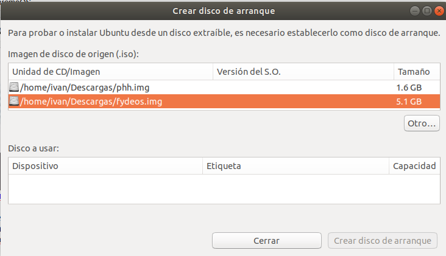

ChromeOS es el sistema operativo de Google para ordenadores portátiles y tabletas inteligentes.
Aunque fue presentado en 2010, Google nunca distribuyó imágenes oficiales de su SO, aunque al estar basado en Chromium OS (sistema operativo que es libre y de código abierto) es posible instalar ChromeOS con la integración de Google teniendo de base una distribución de Chromium.
Requisitos:
1.- Dos dispositivos USB para la instalación
2.- Gparted para reparticionar el sistema (
Descargar)
3.- El recovery de ChromeOS de Atlas (
Descargar)
4.- El script de instalación Croissant.sh (Usa "Guardar cómo..." para descargarlo)(
Descargar)
Instalación:
1.- Prepara el USB de ChromiumOS

1.- Prepara un USB para instalar la imagen y una aplicación para quemar la imagen Fydeos.bin en la memoria.
(En Windows puedes usar Rufus y en Linux la predeterminada).
2.- Una vez instalada la imagen en el USB, conectala a tu PC y selecciona el USB desde el menú de arranque de tu PC. (Si no sabes cómo acceder a ese menú, busca en Google tu modelo).
3.- Al seleccionar el USB te cargará Fydeos, cuando pase del logo y se abra la interfaz de configuración, pulsa Ctrl+Alt+F1 y cargará una pantalla del terminal.
4.- En el terminal, inicia sesión con la contraseña
chronos
5.- Una vez iniciada la sesión, escribe en el terminal
/usr/sbin/chromeos-install --dst /dev/sda
6.- Una vez instalado ChromiumOS, retira el USB y reinicia el PC.
Comprueba que todo funciona bien, sobretodo el WiFi y demás componentes del hardware.
2.- Reparticiona el PC con GParted
1.- Prepara un USB para instalar la imagen y una aplicación para quemar la imagen GParted.iso en la memoria.
(En Windows puedes usar Rufus y en Linux la predeterminada).
2.- Inicia el USB en tu PC y con la sesión de GParted en vivo, abre el administrador de particiones y elimina la partición sda5 y aumenta el tamaño de la partición sda3 hasta que tenga cómo mínimo 4GB de espacio. Aplica los cambios y apaga el PC.
3.- Instalar ChromeOS con la base de FydeOS
En este momento, nuestro PC se encuentra con una base de Chromium instalada llamada FydeOS y está reparticionado, por lo que si intentamos encenderlo sin más el sistema intentará repararse y tendremos que volver a repetir el paso 2 de este tutorial.
1.- En 1 USB, mete los siguientes archivos (Previamente extraídos).
(Renombra el primer archivo con el nombre "atlas.bin").
chromeos_xxxxx.xx.x_atlas_recovery_
stable-channel_mp.bin, croissant.sh, swtpm.tar
En el otro USB, solo debes tener flasheada la imágen de FydeOS que instalaste anteriormente en tu ordenador.
2.- Conecta primero el USB con FydeOS, cárgalo directamente desde tu PC y cuando abra la pantalla de configuración, accede al terminal con el siguiente comando:
ctrl+Alt+F1
Y vuelve a iniciar sesión con el siguiente comando
chronos
3.- Ahora, inserta el segundo USB con todos los archivos necesarios para instalar ChromeOS
Una vez insertado, introduce el siguiente comando para saber con que nombre se ha instalado.
lsblk
4.- Una vez localizada la unidad USB que acabamos de insertar, debemos introducir los siguientes comandos para proceder a la instalación de ChromeOS encima de nuestro ChromiumOS.
(Reemplaza el "USB" con el nombre de tu memoria).
sudo mkdir /home/chronos/tempfolder
sudo mount /dev/USB /home/chronos/tempfolder
cd /home/chronos/tempfolder
sudo bash ./croissant.sh /dev/sda3 ./atlas.bin ./swtpm.tar
sudo mkfs.ext4 /dev/sda1
5.- Listo, ya tienes ChromeOS instalado en tu PC.
Puedes retirar todos los USB y reiniciar para configurar tu nuevo Chromebook.
Créditos:
Alesimula por su gran script de instalación de ChromeOS.